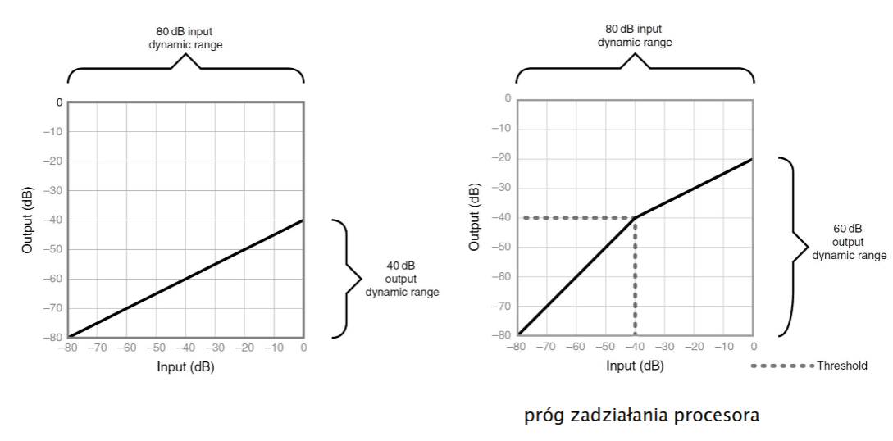
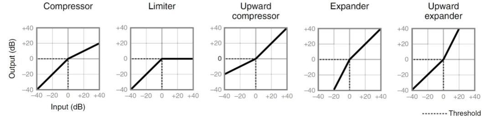

Jeśli strona była dla Ciebie pomocna, możesz wesprzeć mnie w jej utrzymaniu na buycoffee.to/mgarbowski
Filtracja, efekty dźwiękowe, synteza
Filtracja sygnału
- Filtry analogowe i cyfrowe
- Filtr określa charakterystyka amplitudowa
- Każdy filtr wprowadza jakieś zniekształcenia
Rodzaje filtrów
- Przepustowy
- górnoprzepustowy lub dolnoprzepustowy
- nie istnieje idealny filtr (o całkiem stromej granicy odcięcia)
- częstotliwość graniczna (cut-off frequency)
- nachylenie charakterystyki
- Parametryczny
- podbicie/osłabienie określonej częstotliwości
- częstotliwość środkowa
- częstotliwość odcięcia lewo/prawo
- dobroć filtru
- szerokość pasma
- Półkowy
- podbicie/obniżenie powyżej/poniżej określonej częstotliwości
- częstotliwość
- przyrost
Dynamika sygnału
- W sensie makro - zmiany poziomu sygnału dla czasu trwania dłuższego niż wybrzmienie pojedynczej nuty
- W sensie mikro - zmiany poziomu sygnału dla czasu trwania wybrzmienia pojedynczej nuty
Kompresja dynamiki


Synteza dźwięku
- Naśladowanie istniejących dźwięków
- Poszukiwanie nowych interesujących brzmień
- Generacja
- Modulacja
- Filtracja
- Modyfikacja obwiedni
- zmiany czasowe
- kształt sygnału musi się zgadzać, żeby dawać odpowiednie wrażenie
- attack - czas narastania amplitudy od zera do poziomu maksymalnego
- decay - czas opadania maksymalnego poziomu do poziomu podtrzymania
- sustain - amplituda, poziom podtrzymania
- release - czas opadania amplitudy od poziomu podtrzymania do zera
Synteza mowy
- TTS - Text-To-Speech
- Metoda formantowa - odwzorowanie widma mowy
- Metoda artykulacyjna - fizyczne odwzorowanie mechanizmów wytwarzania
mowy
- modelowanie traktu głosowego
- Metoda konkatenacyjna - wkorzystanie nagranych próbek mowy
Cechy mowy widoczne na spektrogramie
- Częstotliwość podstawowa
- Czas trwania
- Poziom szumu
- Kształt widma
- Czas trwania poszczególnych głosek
- Tony głosu
- Spółgłoski/samogłoski
- Rozłożenie energii po częstotliwościach (męski/żeński)